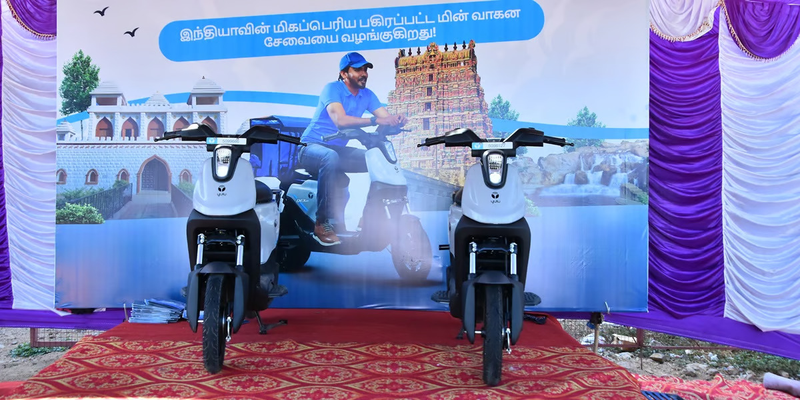
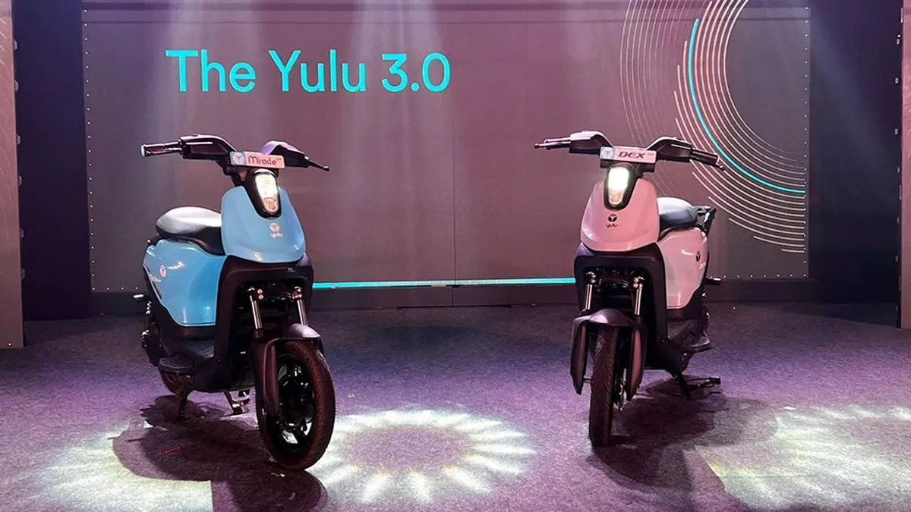

Yulu Flags Off Its Shared EV
Mobility Service in Tirunelveli
The Bridge Chronicle, July 12, 2024
Shared electric vehicle (EV) mobility technology firm Yulu launched its service in Tirunelveli, Tamil Nadu, in partnership with city-based Runa Motors. To begin with, Runa Motors and Yulu will offer hyperlocal delivery EVs for food delivery partners.

Yulu completes 100 million green
deliveries
Economic times , June 21, 2024
Yulu, today announced that its EVs have powered 100 million green deliveries across the country. With 30,000 vehicles on the roads of Bengaluru, Mumbai (including Navi Mumbai), Delhi and Gurugram, Yulu is the medium for hyperlocal deliveries in these cities today.

Shared EV-mobility platform
Yulu’s ride data can help
authorities identify infrastructure
flaws
The Hindu Business line, June 4, 2024
The electric bike-sharing platform captures data as specific as congestion patterns on a given road and responsible factors like peak traffic timings, bad road conditions, weather conditions, and more.

Yulu partners Zeco Mobility for
expanding operations in Kochi
Financial Express, April 15, 2024
Following the launch, Zeco Mobility, which is led by city-based clean energy and mobility entrepreneur R Shyam Shankar, will independently operate Yulu’s popular electric vehicle (EV) service across Kochi, with infrastructural and technological support from Yulu.

Yulu partners with Yuva Mobility
to launch its e2W service in
Indore
Business Standard, April 3, 2024
Yulu, a shared electric two-wheeler mobility provider, has launched its services in Indore, Madhya Pradesh. Yulu has partnered with a local firm, Yuva Mobility, to operate its electric vehicles (EVs) in the city. This marks the first time Yulu has partnered with a local company to operate its EVs.

Bajaj Auto, Magna infuse Rs 160
crore in Yulu
Financial Express , February 23, 2024
Yulu, one of India’s largest shared electric two-wheeler mobility company has announced successful equity infusion of $19.25 million (around Rs 160 crore) in its business. Yulu says over the last year it has seen 5X jump in revenue. Furthermore it is on track to raise Series C round of funds soon.